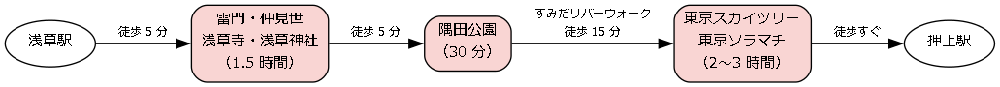
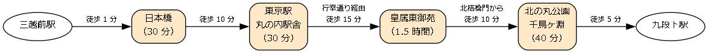
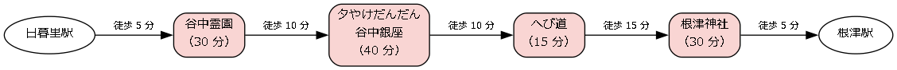
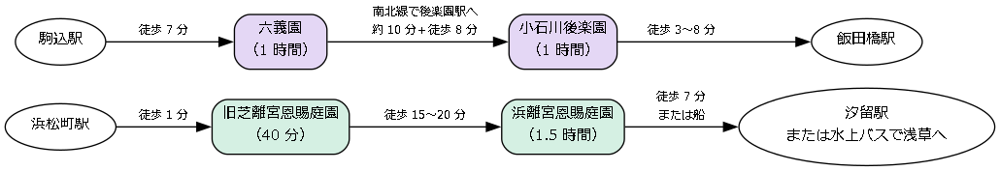
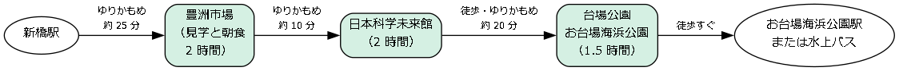

12. モデルコース
この章では、本書で紹介した名所を組み合わせて、半日から 1 日で回れるモデルコースを 6 本紹介する。各コースの所要時間や移動時間は目安であり、名所での過ごし方や混雑の具合によって変わる。各名所の休館日や営業時間は、出かける前に公式サイトで確認してほしい。
コース |
所要時間 |
主な名所 |
|---|---|---|
1 日 |
浅草寺、隅田川、東京スカイツリー |
|
半日 |
日本橋、東京駅丸の内駅舎、皇居東御苑、北の丸公園 |
|
半日 |
谷中霊園、谷中銀座、根津神社 |
|
半日 |
旧芝離宮恩賜庭園、浜離宮恩賜庭園（または六義園、小石川後楽園） |
|
1 日 |
豊洲市場、お台場 |
|
1 日 |
高尾山 |
コースの図の四角は名所、矢印の横の文字は移動の手段と時間の目安を表す。
12.1. 下町と隅田川
浅草寺に参拝したあと、隅田川を渡って東京スカイツリーに上るコースである。江戸から続く門前町と、21 世紀の電波塔を 1 日で味わえる。

図: 下町と隅田川のコース
時刻の目安 |
場所 |
過ごし方 |
|---|---|---|
9:00 |
人の少ない朝のうちに雷門、仲見世、本堂、浅草神社を巡る。 |
|
11:00 |
浅草の街 |
昼食をとる。浅草には天ぷら、すき焼き、そばなどの老舗が多い。 |
12:30 |
隅田公園を散歩し、すみだリバーウォークを歩いて対岸に渡る。 |
|
13:30 |
展望台に上り、東京ソラマチで買い物や休憩をする。 |
浅草寺のあと、水上バスで隅田川を下って浜離宮恩賜庭園やお台場に向かうこともできる。その場合は、東京スカイツリーを別の日に回すとよい。
12.2. 江戸城の名残を歩く
五街道の起点の日本橋から、東京駅丸の内駅舎を経て、江戸城の跡を歩くコースである。江戸と明治の東京の中心を、歩いてたどれる。

図: 江戸城の名残を歩くコース
時刻の目安 |
場所 |
過ごし方 |
|---|---|---|
9:30 |
麒麟の像と道路元標を見る。 |
|
10:10 |
駅前広場から駅舎の全景を眺め、ドームの天井を見上げる。 |
|
11:00 |
大手門から入り、番所と石垣を見ながら本丸に上る。天守台に登る。 |
|
12:40 |
北桔橋門から出て北の丸公園を歩き、田安門を抜けて九段下駅に出る。 |
皇居東御苑は月曜日と金曜日が原則として休園であるため、それ以外の曜日に出かける。桜の時期は、北の丸公園から千鳥ヶ淵緑道に足を延ばすとよい。
12.3. 谷根千散歩
日暮里駅から谷中、千駄木を抜けて根津に至る、下町の路地を歩くコースである。寺町と商店街、江戸時代の神社をめぐる。

図: 谷根千散歩のコース
時刻の目安 |
場所 |
過ごし方 |
|---|---|---|
13:00 |
谷中・根津・千駄木（谷中霊園） |
霊園の中のさくら通りを歩き、寺町の路地に入る。 |
13:45 |
谷中・根津・千駄木（谷中銀座） |
夕やけだんだんを下り、商店街で総菜や菓子を買って食べ歩く。 |
14:40 |
谷中・根津・千駄木（へび道） |
曲がりくねった細い道を歩き、根津の方面へ向かう。 |
15:10 |
権現造りの社殿と千本鳥居を見る。 |
日暮里駅の近くの朝倉彫塑館に立ち寄ると、さらに 1 時間ほど必要になる。午後に出かけて、夕やけだんだんで夕暮れを迎えるように時間を調整するのもよい。
12.4. 大名庭園めぐり
江戸時代の大名庭園を 2 つ続けて巡るコースである。浜松町・汐留の海辺の庭園を巡るコースと、駒込・小石川の山の手の庭園を巡るコースの 2 通りを示す。

図: 大名庭園めぐりのコース（上：山の手の庭園、下：海辺の庭園）
コース |
場所 |
過ごし方 |
|---|---|---|
海辺の庭園 |
浜松町駅を出てすぐの庭園で、大山に登って池の全景を眺める。 |
|
海辺の庭園 |
潮入の池を巡り、中島の御茶屋で抹茶をいただく。帰りは水上バスで浅草に向かうこともできる。 |
|
山の手の庭園 |
藤代峠に登り、和歌の世界を表した庭を眺める。 |
|
山の手の庭園 |
円月橋や西湖の堤など、中国の名所を模した景色を巡る。 |
どちらのコースも、春の桜と秋の紅葉の時期が特におすすめである。
12.5. 湾岸の新しい東京
朝の豊洲市場を見学してから、ゆりかもめでお台場に移動し、海辺の公園と博物館を巡るコースである。夕方は海浜公園でレインボーブリッジと夜景を楽しむ。

図: 湾岸の新しい東京のコース
時刻の目安 |
場所 |
過ごし方 |
|---|---|---|
7:30 |
見学者通路から卸売場と仲卸売場を見学し、市場の中の飲食店で朝食をとる。 |
|
10:00 |
お台場（日本科学未来館） |
最先端の科学技術の展示を体験する。 |
13:00 |
昼食のあと、台場公園で幕末の砲台の跡を見て、海浜公園を散歩する。 |
|
夕方 |
海浜公園からレインボーブリッジと都心の夜景を眺める。 |
豊洲市場は日曜日、祝日、休市日には見学できないため、市場の開場日のカレンダーを事前に確認する。帰りは、お台場海浜公園から水上バスに乗れば、日の出桟橋や浅草に向かえる。
12.6. 高尾山ハイキング
ケーブルカーで中腹まで上り、薬王院に参拝してから山頂を目指すコースである。下りは尾根道の稲荷山コースを歩き、麓の温浴施設で汗を流す。
図: 高尾山ハイキングのコース
時刻の目安 |
場所 |
過ごし方 |
|---|---|---|
9:00 |
高尾山口駅 |
新宿駅から京王線で約 50 分。ケーブルカーの清滝駅まで歩く。 |
9:30 |
ケーブルカー |
約 6 分で中腹の高尾山駅に着く。展望台から都心の方向を眺める。 |
10:00 |
高尾山（1 号路、薬王院） |
たこ杉を見ながら歩き、薬王院に参拝する。 |
11:00 |
高尾山（山頂） |
山頂で富士山を眺めながら昼食をとる。 |
12:30 |
稲荷山コース |
尾根道を下って高尾山口駅に戻る。 |
稲荷山コースは土の山道で、雨のあとは滑りやすい。体力に自信がない場合は、下りも 1 号路を歩き、ケーブルカーやリフトで下りるとよい。日の短い秋から冬は、遅くとも 15 時ごろまでに下山を始める。